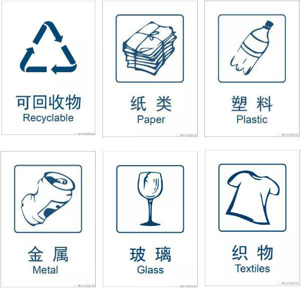

可回收垃圾 Recyclable Waste


定义 Definition
即适宜回收利用和资源化处理的废弃物，需要满足未被污染、可清洁处理、具备再生加工价值。
That is, the waste suitable for recycling and resourceful treatment needs to meet the requirements of being unpolluted, cleanable and having the value of regeneration and processing.
例子 Examples
1.废纸类 Waste paper category
打印纸、信封、笔记本、纸箱、快递盒、包装纸、报纸、书籍、杂志等。
Printing paper, envelopes, notebooks, cartons, express delivery boxes, wrapping paper, newspapers, books, magazines, etc.
2.塑料类 Plastic category
火锅汤底、鱼骨、碎骨、茶叶渣、咖啡渣等。
Mineral water bottles, beverage bottles, shampoo bottles, plastic hangers, plastic toys, etc.
3.玻璃类 Glassware
酱料瓶、酒瓶、玻璃杯、玻璃窗等。
Sauce bottles, wine bottles, glass cups, glass Windows, etc.
4.金属类 Metals
易拉罐、罐头盒、金属餐具、钥匙、螺丝钉、铝合金门窗、铁质衣架等。
Cans, tin cans, metal tableware, keys, screws, aluminum alloy doors and Windows, iron clothes hangers, etc.
5.织物类 Fabric category
干净的外套、裤子、床单、窗帘、桌布、毛绒玩具等。
Clean coats, trousers, bed sheets, curtains, tablecloths, plush toys, etc.
下一篇：有害垃圾